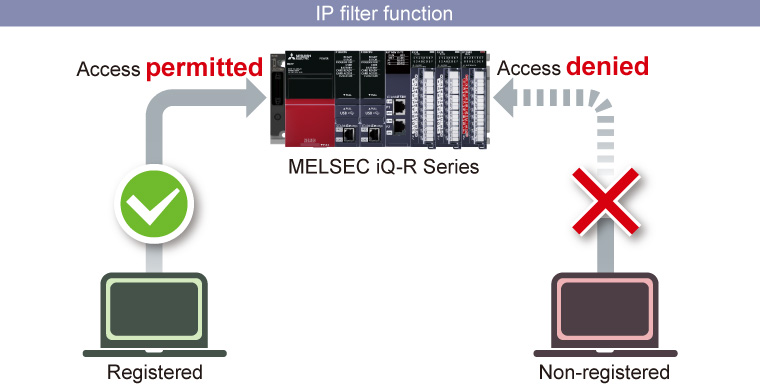

Controllers MELSEC iQ-R Series Fitur Produk -Solusi-

Meningkatkan performa dan kemampuan peralatan
Poin1Point 1 Memastikan modul versi fungsional terbaru
- ■ Hingga saat ini, untuk mendapatkan fitur terbaru yang ditawarkan versi modul baru diperlukan pembelian modul lain. Dengan memanfaatkan fungsi pembaruan firmware modul baru, modul MELSEC iQ-R Series saat ini dapat diperbarui ke versi yang lebih baru, sehingga mendukung fitur yang lebih baru tanpa biaya penggantian modul
- ■ Pembaruan dapat dilakukan menggunakan perangkat lunak rekayasa GX Works3 atau kartu memori SD
Peningkatan produktivitas
Produktivitas dapat ditingkatkan dengan memanfaatkan fungsi modul CPU MELSEC iQ-R Series dan jaringan terintegrasi kecepatan tinggi CC-Link IE TSN.
Poin2Point 2 Pemrosesan kecepatan tinggi/akurasi tinggi dapat meningkatkan produktivitas
- Bus sistem kecepatan tinggi sekitar 40 kali lebih cepat dibandingkan dengan model yang ada, mencapai pemrosesan data kapasitas besar dan sangat cepat antara modul CPU atau modul jaringan
- Fungsi sinkronisasi antar-modul memungkinkan waktu input atau output dari berbagai modul I/O dan modul informasi lanjutan disinkronkan dengan waktu eksekusi program modul CPU. Hal ini mewujudkan kontrol akurasi tinggi pada sistem dan peralatan
- Penggunaan CC-Link IE TSN mewujudkan sinkronisasi tingkat jaringan, menyediakan sinkronisasi tingkat node yang memastikan aliran data deterministik tanpa pengaruh dari penundaan transmisi data

Pemecahan Masalah
Mitsubishi Electric mengusulkan solusi pemeliharaan yang ditingkatkan untuk pemecahan masalah cepat pada kesalahan peralatan dan program. Pemecahan masalah yang efisien dapat meminimalkan waktu henti peralatan, mengurangi waktu dan biaya untuk pemulihan.
Poin3Point 3 Perekam sistem mengidentifikasi pola anomali dari umpan video
- Dengan koordinasi modul perekam kamera dan perangkat lunak rekayasa GX VideoViewer Pro, perbedaan dari pola normal diekstraksi berdasarkan perubahan dalam "penampilan (warna, bentuk, posisi, dll.)" dan "operasi (jumlah pergerakan dalam satuan waktu, dll.)", kemudian ditandai pada umpan video secara otomatis
- Perangkat target dan label yang akan direkam dapat diatur dengan pemicu yang luas, memungkinkan untuk memeriksa target saja

Poin4Perekam sistem memungkinkan debugging peralatan yang lebih cepat
- Dengan memutar ulang data perekaman seluruh sistem yang disinkronkan dengan program, status kesalahan peralatan dapat diperiksa dalam deret waktu
- Penyebab operasi yang tidak terduga saat startup peralatan dapat dianalisis secara visual, memungkinkan debugging peralatan dengan cepat

Peningkatan Keamanan
Risiko pelanggaran data dapat dikurangi dengan fungsi-fungsi seperti kunci keamanan dan filter IP.
Poin5Autentikasi keamanan yang ditingkatkan dan pemblokiran akses tidak sah mengurangi risiko pelanggaran data
- Modul CPU hanya dapat diakses dari komputer yang alamat IP-nya terdaftar (fungsi filter IP)
- Program dapat dikunci untuk mencegah dibuka pada komputer yang kunci keamanannya belum terdaftar (fungsi autentikasi kunci keamanan)
- Setiap Program Organization Unit (POU) dapat dikunci (fungsi kata sandi blok)
- Akses dari perangkat yang tidak terdaftar dapat diblokir, sehingga menurunkan risiko peretasan program dan perusakan tidak sah oleh pihak ketiga
